Minehead 기초 & 팁
- Mr Minehead 위치: Minehead는 리서치 그리드 업그레이드 J6을 구매한 후 잠금 해제되며, World 7의 Minefield 맵(Boomy Mine 맵)에 위치합니다.
- 지뢰 찾기가 아닙니다: 비슷한 외형에도 불구하고 게임 메카닉은 지뢰 찾기와 전혀 다릅니다. 공개하는 모든 칸은 무작위로 데미지 숫자 또는 깊이 폭탄(Depth Charge) 중 하나입니다. 목표는 숫자 타일을 공개해 필요한 데미지를 입히는 것이며, 체력 하나를 소모하는 깊이 폭탄은 피해야 합니다.
- Active(직접 플레이) 화폐 획득: Research와 마찬가지로 게임을 열어두지 않으면 Minehead 화폐 획득이 크게 줄어들며, 이는 리서치 AFK 비율을 기반으로 합니다.
- 화폐 우선: Minehead 전략이 적을 처치하는 데 도움이 되지만, 근본적으로는 승리 확률을 높이는 데미지 또는 유틸리티 업그레이드에 도달할 충분한 업그레이드를 쌓기 위한 대기 게임입니다. 따라서 화폐와 관련된 것은 항상 최우선 순위여야 합니다.
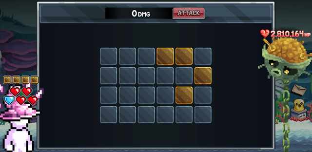
Minehead 전략
초기 게임플레이 전략은 공격 전에 타일 하나만 공개하는 것입니다. 느리기는 하지만 각 턴마다 클릭 수가 늘어날수록 깊이 폭탄 발동 확률이 높아지므로 이 방식이 폭탄을 피할 최선의 확률을 유지합니다.
Golden Tiles 잠금 해제 후: 안전한 타일이 보장되므로 전략이 달라집니다. 상대방을 처치하거나 체력에 큰 데미지를 주기 위해 한 번에 대규모 단일 공격을 시도하다가, 성과가 없으면 초기 방식으로 돌아갑니다.
그리드에 황금 타일이 모두 채워질 때까지 초기 전략을 사용하다가, 그 이후에는 여러 타일을 공개한 뒤 모두 클릭해 대규모 공격을 만드세요. 타일을 더 많이 공개할수록 위험은 높아지지만, 상대방 난이도와 기본 데미지에 따라 필요할 수 있습니다.
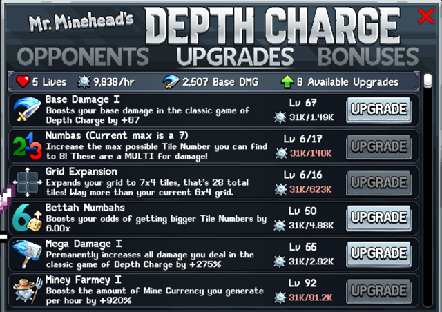
Boom Blocker 잠금 해제 후: 이 발전으로 황금 타일 쌓기 접근법이 더욱 강화됩니다. 깊이 폭탄을 발동할 때까지(Boom Blocker 소모) 제한 없이 타일을 클릭하고, 그 후 보장된 황금 타일을 획득할 수 있습니다. 이 전술은 데미지를 높이거나 깊이 폭탄 회피를 연장하는 Triple Crown Hunter와 Legal Cheating Button을 통해 더욱 강력해집니다.
Minehead 업그레이드 우선순위
새 업그레이드는 리서치 레벨에 따라 잠금 해제되지만, 진행에 결정적인 것은 일부에 불과합니다. 아래 추천은 업그레이드를 대략적인 우선순위 순서로 나열합니다:
| 미니헤드 업그레이드 | 비고 |
|---|---|
| Miney Farmey I | 시간당 광산 화폐 생성량을 높입니다. 더 많은 업그레이드를 위한 화폐를 늘리는 핵심 업그레이드로 항상 먼저 올려야 합니다. |
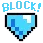 Boom Blocker |
깊이 폭탄 게임 시작 시 +1 블록으로 시작합니다. 미니헤드 전략에 매우 중요하지만 지금은 1회 구매만 가능합니다. |
| Grid Expansion | 그리드를 확장합니다. 그리드 타일이 늘어나면 깊이 폭탄에 걸릴 확률이 낮아집니다. |
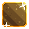 Golden Tiles |
깊이 폭탄에서 안전한 황금 타일을 클릭할 수 있습니다. 미니헤드 전략에 매우 중요하므로 구입 가능할 때 구매하세요. |
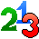 Numbahs |
찾을 수 있는 최대 타일 숫자를 높입니다! 이것들은 데미지에 대한 배수입니다! 가능한 한 자주 구매해야 하는 핵심 데미지 배수입니다. |
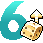 Bettah Numbahs |
더 큰 타일 숫자를 얻을 확률을 높입니다. 위 업그레이드와 함께 더 자주 높은 숫자를 얻을 수 있습니다. |
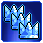 Triple Crown Hunter |
타일에 파란 왕관 배경이 생길 수 있으며, 3개를 공개하면 현재 데미지가 배수로 증가합니다. Crown Craze를 업그레이드하면 확률이 약간 높아져 황금 타일 전략과 잘 맞습니다. |
| Legal Cheating Button | 깊이 폭탄을 공개합니다. 전략에 유용한 유틸리티 추가 요소입니다. |
| Extra Lives | 각 게임 시작 시 +1 추가 목숨으로 시작합니다! 추가 목숨은 상대방에 대해 좋은 라운드를 더 많이 가질 기회를 줍니다. |
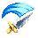 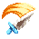 Base Damage |
기본 데미지를 높입니다. 구입이 쉬운 핵심 업그레이드로 초기 데미지의 기반입니다. Base Damage II를 잠금 해제한 후에는 비용이 Base Damage I의 3배여야 하며, 업그레이드당 기본 데미지 1 대비 3을 제공합니다. |
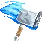 Mega Damage |
깊이 폭탄 클래식 게임에서 입히는 모든 데미지를 영구적으로 증가시킵니다. 위 업그레이드에서 얻은 기본 데미지에 배수를 적용합니다. |
리서치 그리드 업그레이드 J6(기본), I5(배수), H5(퍼센트 부스트)는 핵심 화폐 향상을 제공합니다. F6도 잠금 해제되면 미니헤드 화폐에 배수를 적용해 화폐를 부스트합니다. 처음에는 J6만 최대화하는 것이 좋으며, 리서치 포인트는 계정 전반에 더 나은 업그레이드를 지원합니다. 원하는 리서치 기능을 잠금 해제한 후에는 미니헤드 업그레이드를 우선시하세요: I5(화폐), H5(화폐 및 일일 시도 횟수), H4(데미지 배수), G4(깊이 폭탄 회피 확률), G5(턴당 추가 데미지) 순입니다.
Minehead 부스트 출처
| 출처 | 업그레이드 세부 사항 |
|---|---|
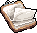 리서치 노드 (Research Nodes) |
J6(기본) – I5(배수) – H5(+%). 버튼을 잠금 해제하면 F6도 미니헤드 화폐에 배수를 줍니다. |
| Sushi | 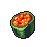 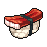 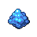 티어 2 — 미니헤드 업그레이드 30% 할인. 티어 13 — 미니헤드 화폐 획득 1.5배 배수. 티어 17 — 미니헤드 업그레이드 60% 할인. |
| Silicon – Minehead Money Printer | 미니헤드 화폐 획득을 레벨당 +1%씩 높입니다! 새로운 배수이므로 항상 관련성이 있습니다! |
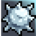 아케이드 (Arcade) |
미니헤드 화폐 획득 12.5% |
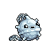 Boomy Mine Pet |
미니헤드 화폐 2배 |
| 게이밍 슈퍼비트 (Gaming Superbits) | Zuper Less Charge — Mr. Minehead의 깊이 폭탄 게임에서 상대방이 항상 폭탄 1개를 덜 가집니다. |
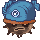 Basshead Minehead Opponent |
미니헤드 화폐 획득에 1.50배 배수를 적용합니다. |
Minehead 승리 보너스
| 미니헤드 이름 (HP) | 보너스 |
|---|---|
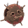 Bronzehead (5) |
총 데미지 1.1배 및 드롭률 1.1배! |
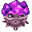 Gemhead (14) |
리서치에서 +2% AFK 수익! 오프라인 리서치에 영향을 미치며, 온라인이면 100% 수익을 얻습니다! |
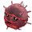 Yarnhead (42) |
관찰 연구를 위한 새 리서치 확대경 +1개! |
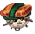 Sashimihead (116) |
브리딩의 'Blooming Axe' 업그레이드 최대 레벨 +40 증가 |
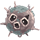 Bleckhead (304) |
무기 POW당 +1% 데미지. 현재 무기 기준 $x 데미지 획득 |
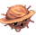 Saturnhead (755) |
Bubba the Seal의 모든 업그레이드 비용이 기본보다 2.00배 저렴해집니다. |
| Basshead (1.81k) | 미니헤드 화폐 획득에 1.50배 배수 적용 |
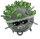 Kelphead (7.71k) |
아톰 콜라이더에 추가 아톰을 잠금 해제합니다*. 업그레이드 시 미니헤드 화폐 획득이 증가합니다. |
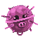 Snouthead (17.4k) |
파밍 주간 이그조틱 마켓 구매 +2회 추가, 첫 몇 회 구매는 작물이 들지 않습니다. |
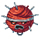 Threadhead (38.2k) |
모든 신성(Divinity)의 축복 업그레이드 최대 레벨 +80 |
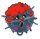 Clownhead (155k) |
리서치 AFK 수익 +3% 추가 |
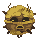 Goldhead (333k) |
스시 스테이션에서 획득하는 Bucks에 1.25배 배수 적용 |
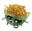 Maizehead (2.83M) |
새 확대경 +1개 추가. 관찰을 더 세밀하게 연구할 수 있습니다! |
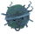 Ironhead (11M) |
매일 Grind Time 버블 레벨 +30 |
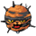 Purrhead (22.9M) |
스펠렁킹 레벨당 위대한 발견 확률 +2% |
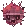 Screamhead (47.2M) |
Kattlekruk 신성에서 일일 버블 레벨 +10 추가 |
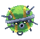 Ballhead (179M) |
마그네슘 아톰의 트래핑 보너스가 +20일 더 증가를 유지합니다. |
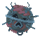 Grosshead (364M) |
게이밍에서 화학 식물 성장 확률 1.05배 |
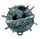 Blindhead (736M) |
건설 슬롯 +1 추가, 건설 속도가 더 빨라집니다. |
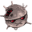 Detahead (11B) |
모든 기념비에서 모든 출처로부터 획득하는 기념비 AFK 시간이 1.25배 |
| Brainhead (22B) | 새 확대경 +1개 추가. 관찰을 더욱 세밀하고 체계적으로 조사하는 역량이 확장됩니다. |
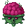 Brainhead (44B) |
Hat Rack 보너스 배수 +2% |
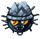 Leopahead (161B) |
스펠렁킹의 최대 수확량 기반 일일 앰버 획득 1.50배 |
*Wind Walker 아톰 업그레이드를 아직 잠금 해제하지 않았다면, 이것이 Aluminium을 대신 잠금 해제합니다. 이 경우 Compass에서 Wind Walker 아톰 업그레이드를 잠금 해제해 Silicon 미니헤드 화폐 업그레이드를 받으세요.